özet
Dotto•Man benim uzun soluklu kişisel projem: noktalama işaretlerinin mürekkepten varlıklara dönüştüğü bir evren. Karakter tasarımı, piksel sanat, 2D animasyon ve web sitesi aynı çatı altında. Bir nokta olarak başladı, sonra pelerin taktı.
rolüm
Karakterlerden görsel dile, animasyonlardan web sitesine ve hikâye yapısına kadar hepsi bende. Ekip toplantıları bu yüzden çok kısa sürüyor.
görsel alan
Aşağıda karakterlerin piksel sanat halleri var. Paus henüz yolda; virgül olduğu için acelesi yok.
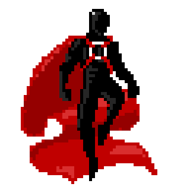
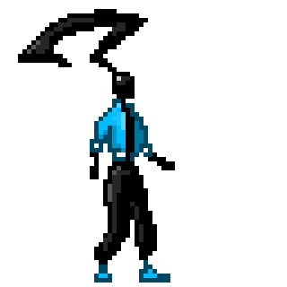
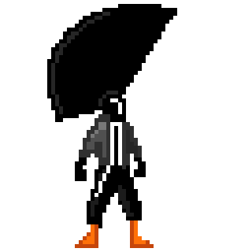
animasyondan kareler
Bölümlerden kareler: karakterler, mekânlar, bir motor ve bolca gece. Görsellere tıklayınca büyüyor.

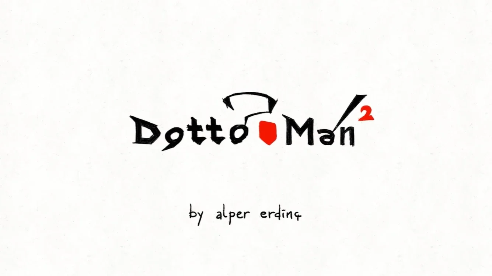

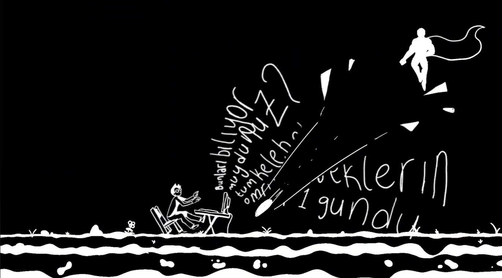

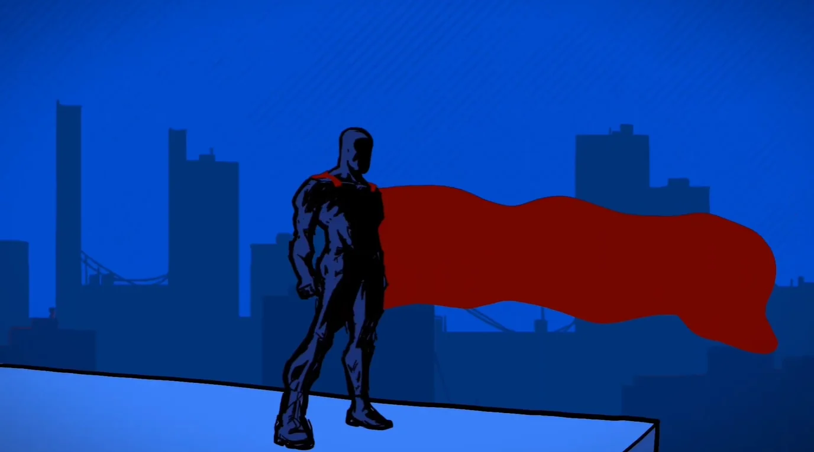

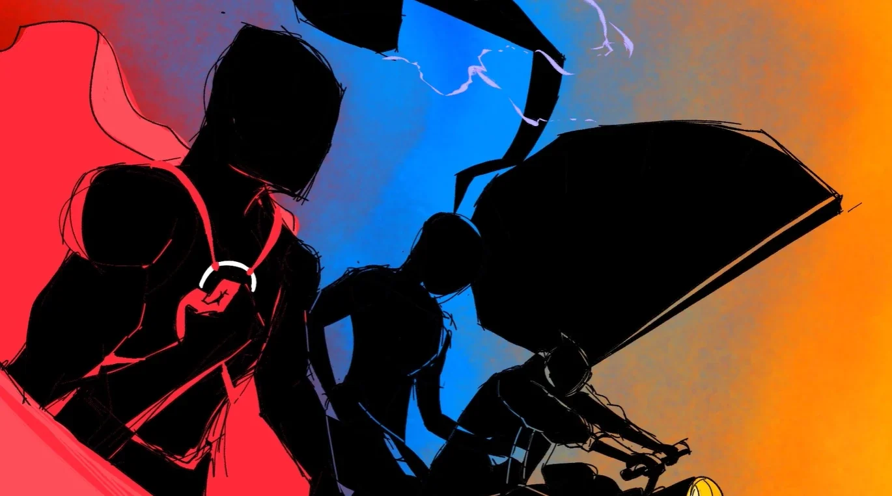

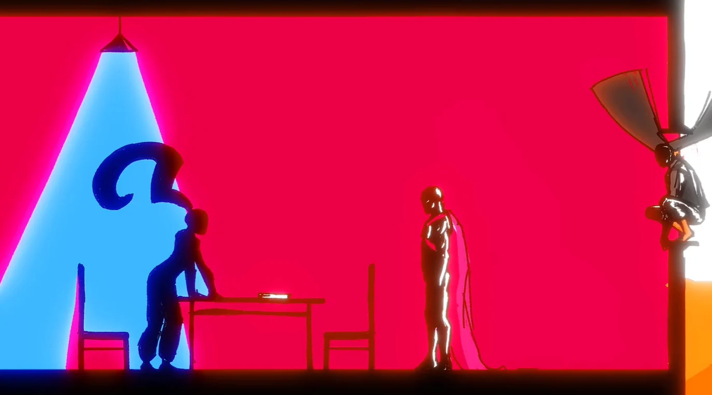

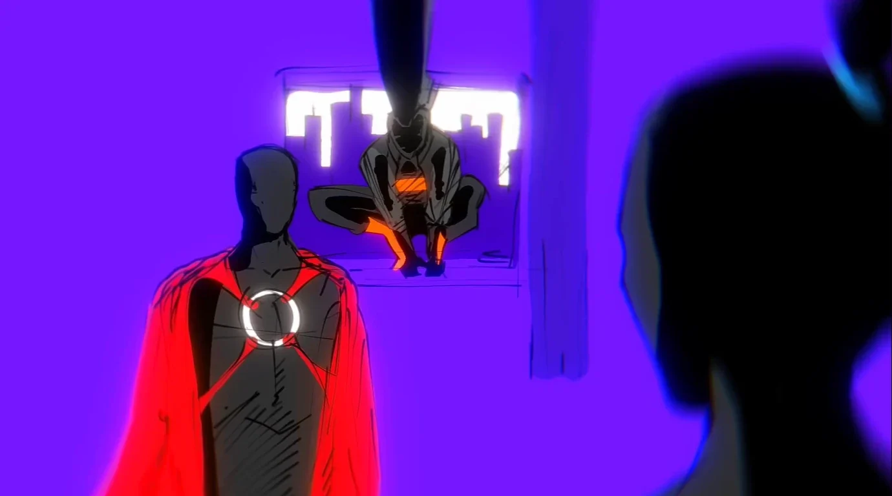

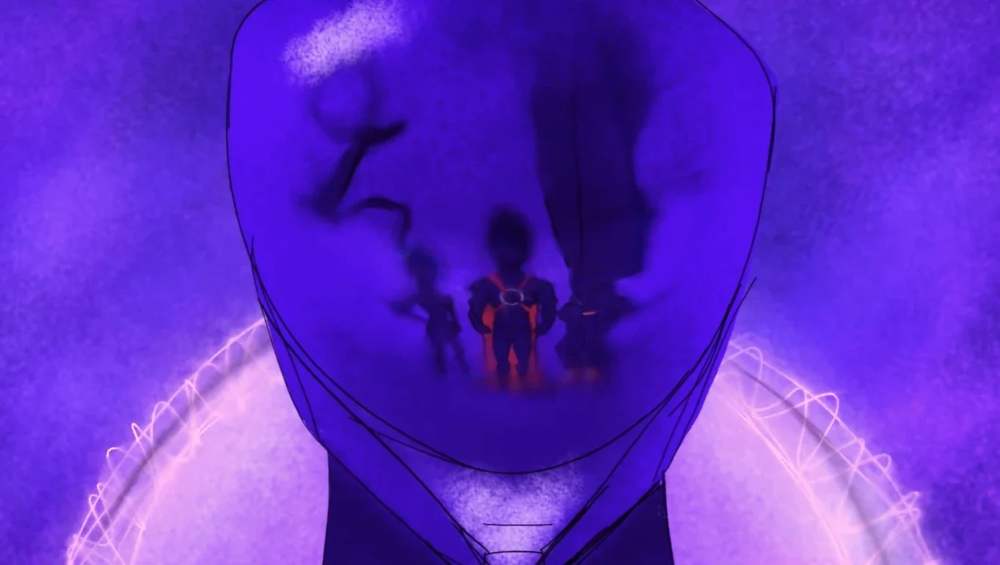

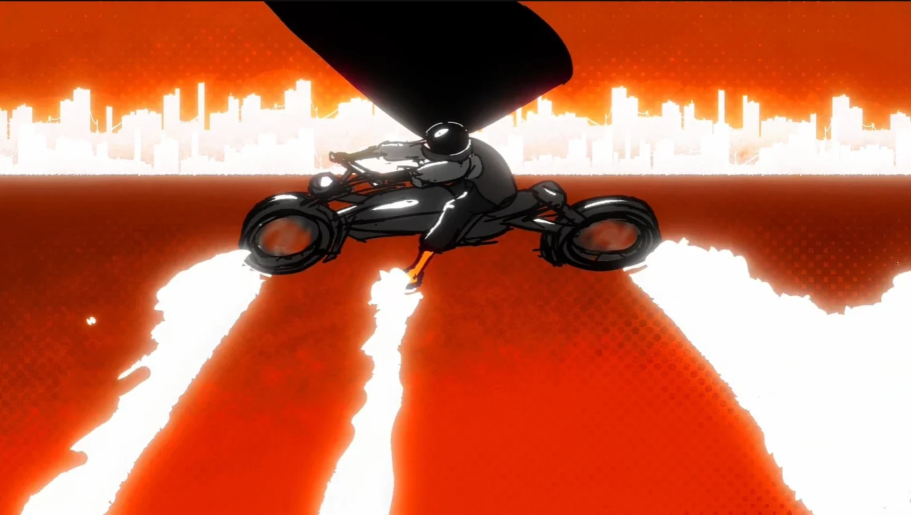

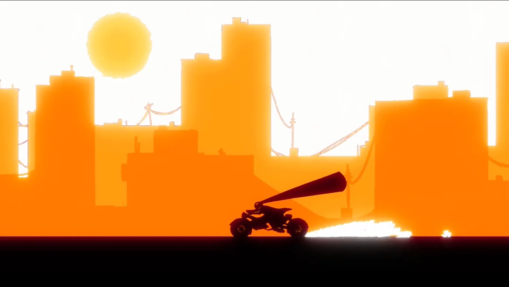

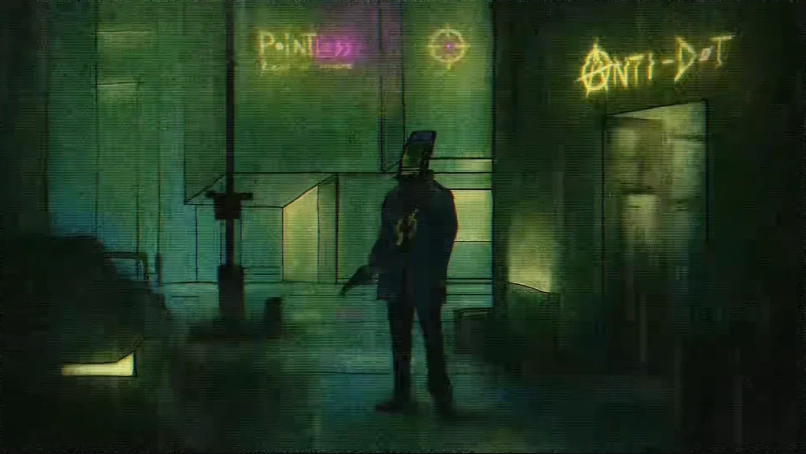

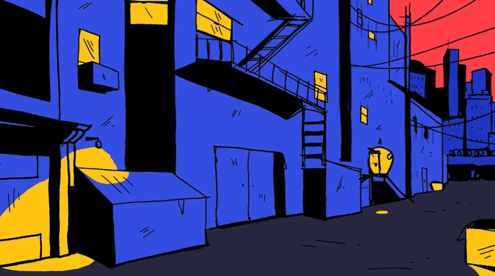

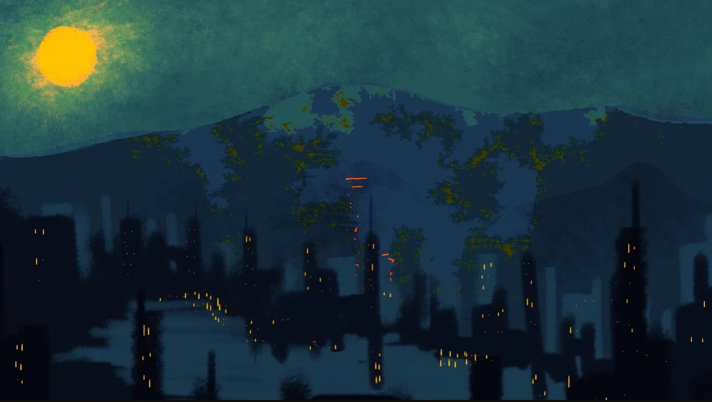

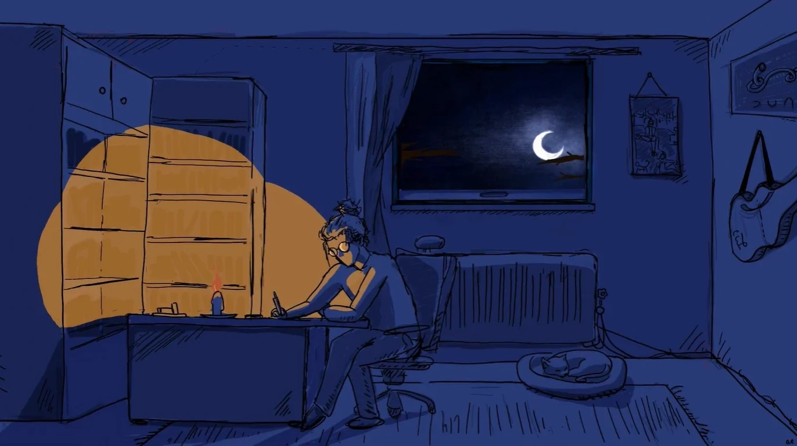
kapsam
Evren bölüm sayfaları, karakter tanıtımları, iki dilli içerik ve kendi web sitesiyle büyüyor. Rex'i merkeze alan oyun prototipim Kantanfu da bu evrende geçiyor; şimdilik rafta bekliyor.
teknolojiler
- PHP
- CSS
- JavaScript
- Pixel Art
- TR/EN i18n